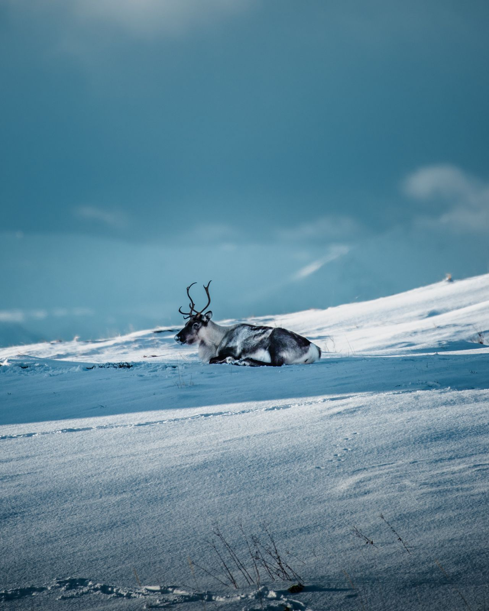

Spatial, climate, and behavioral
drivers of survival
This research uses data from the Western Arctic Caribou Herd (WACH), located in northwestern Alaska, as a case study to examine how climate patterns, space use, and migratory behavior impact caribou survival. The WACH has declined in numbers in recent years, and researchers have observed changes in their migration pattern in response to roads, timing of the spring thaw, and other factors. So far, we see that caribou who stray far away from the core of the herd tend to have higher mortality rates, especially during the calving and post-calving periods. We found that shifts in the herd's winter range in recent years were driven, at least in part, by the herd's collective memory of poor survival on their usual winter range. Also, WACH caribou whose spring migration was impeded by a remote industrial road were less likely to survive than caribou who managed to cross or circumnavigate the road.
Lead: Dr. Elie Gurarie
Tobias Bjørkli